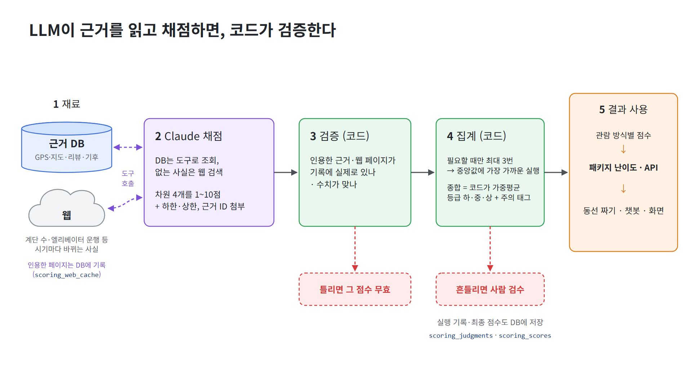
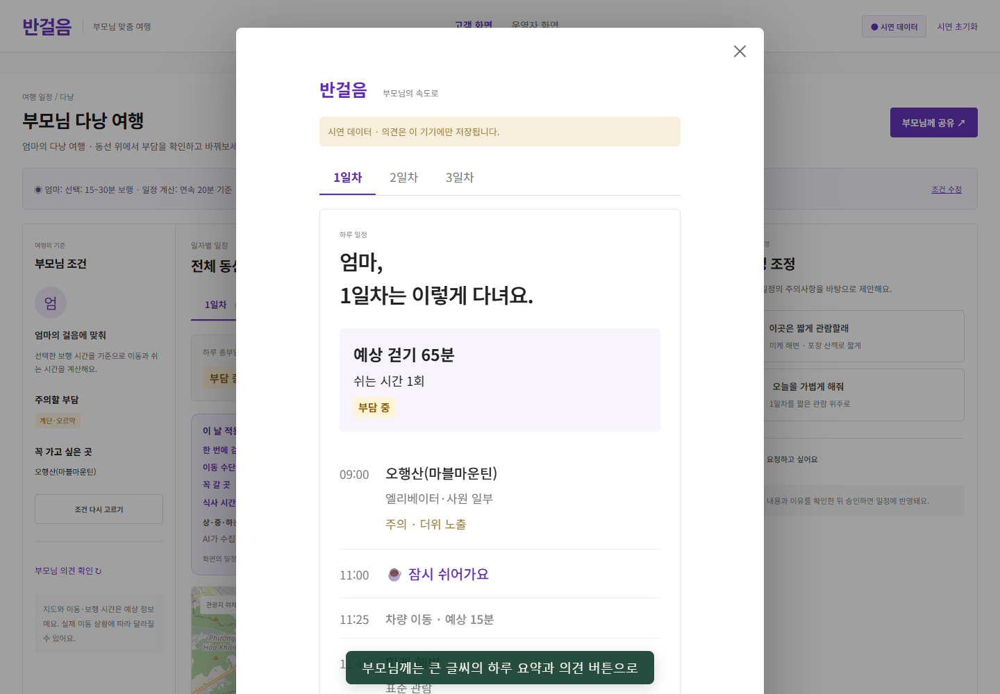

반걸음
효도여행은 카테고리입니다.
우리가 푼 문제는 따로 있습니다.
대전제
자녀에게도, 여행사에도 없다
멘토링에서 확인한 실제 불편
→ 상품에 개인이 느끼는 부담 정보가 없다
→ 부담을 판단할 공통 기준이 없다
→ 데이터가 있어도 소화 가능한 일정은 보장되지 않는다
→ 피로도를 판단할 근거 있는 수치가 없다
관광지 불편 1위 경사·계단 23.1% (경기연구원 2024) · 패키지도 하루 2~3만 보 (주최측 설명)
관광지가 얼마나 힘든지,
공통 수치로 만든 기준표가 없습니다
기존 방식은 부담을 계산하지 않는다
| 현재 대안 | 한계 |
|---|---|
| 패키지 일정표 | 관광지 사이 차량 시간만 있음 |
| 여행 플래너·지도 | 장소를 선으로 이어 줄 뿐 |
| AI 여행 챗봇 | "부모님과 함께"를 문장으로만 반영, 매번 답이 다름 |
왜 아직 안 풀렸나
여행사도 필요성은 알지만 더 큰 사업에 밀려 우선순위가 낮다
관광지 피로도에 대한 공식 데이터 자체가 부족하다
관광지 부담을 근거 있는 수치로
네 가지 기준 → 1~10점 → 상·중·하
계단·오르막 3 · 걷는 양 3 · 더위 2 · 혼잡 1 (가중평균, 코드 계산)
하 1~3 중 4~5 상 6 이상 + 주의 태그
같은 오행산도 보는 방식에 따라 다르다
| 엘리베이터 · 사원 일부 | 중 5 |
| 일반 관람 | 상 6 |
| 계단으로 정상까지 | 상 7 |
다낭 15곳 결과
| 상 | 바나힐 6 · 오행산 6 |
| 중 | 미선 5 · 호이안 구시가지 · 누이탄타이 · 영흥사 · 아시아파크 · 미케 해변 4 |
| 하 | 한시장 · 하이반 고개 · 호이안 야시장 · 용다리 · 껌탄 · 다낭 대성당 · 참 조각 박물관 |
일정을 새로 만드는 것이 아니라,
만들어진 일정의 부담을 검증합니다
근거는 어디서, 어떻게 믿을 수 있나

왜 AI인가
관광지 범위·실제 관람 경로(정상까지 안 갈 수도, 케이블카가 대신할 수도)는 규칙으로 판단할 수 없다
믿을 수 있게 하는 장치
- 인용한 근거 ID·수치를 코드로 대조, 틀리면 무효
- 필요할 때만 최대 3회 반복, 중앙값에 가장 가까운 결과 채택
- 흔들림이 크면 사람 검수로
15곳 중 14곳 통과 · 한시장 1곳 검수 대기
힘든 곳이 몰렸나, 그리고 그 사람에게 많은가
배치 규칙
그날 가장 높은 점수 + 6점 이상이 연달아 붙을 때마다 +1 (하루 최대 +2)
상한 7 — 넘으면 부담이 가장 큰 곳부터 짧은 관람으로 자동 전환
바나힐 6 → 오행산 전체 7 = 7+1 = 8 초과
오행산을 짧은 관람(5)으로 → 6 통과
사람 체력 상한 (하루 점수 합계)
| 연령 | 20~40대 | 50대 | 60대 | 70대 | 80+ |
|---|---|---|---|---|---|
| 하루 상한 | 14 | 12 | 11 | 10 | 8 |
= 14 × 연령별 보행 능력 비율 (한국 성인 612명 보행 연구 · 세션 RPE · 젖산역치 논문)
오행산 + 영흥사 + 미케 해변 = 14
30대 가능 · 70대(10)는 초과 → 2곳으로
동선은 규칙이 짜고, 현실과 다르면 사람이 고친다
규칙 우선순위
- 연속 보행 한도 12~90분 (부모님 응답 기준, 없으면 20분)
- 한도에 닿으면 25분 휴식, 도보 10분 넘으면 택시
- 체력이 낮으면 걷기 부담이 큰 곳을 짧은 관람으로
- LLM은 요청을 수정 명령 9개로 바꾸기만 (1회 약 $0.0003)

그날 적용된 규칙·변경 근거를 화면에 표시 · 변경안은 사람이 승인해야 반영 (점수 재채점 약 $0.065)
실제 화면으로 보기
자녀도, 여행사 MD와 가이드도 쓴다
자녀 → 부모님
조건 입력 → 동선 → 조정 → 승인 → 부모님께 큰 글씨 공유

상품 MD
기존 패키지 일정을 넣으면 일차별 난이도
| 1일차 일정 | 최고 | 연속 | 하루 |
|---|---|---|---|
| 바나힐 일반 → 오행산 전체 | 7 | +1 | 8 |
| 오행산만 짧은 관람으로 | 6 | 0 | 6 |
패키지 최고 8 → 6 · 평균 6.0 → 5.0
가이드
개인 역량에 기대던 배치를 공통 기준표로
확장: 판단 기준이 "가장 체력이 약한 사람"이라 3대 가족까지 · 같은 수집·채점 과정으로 다른 도시까지
예상 못 한 상황에는 이렇게 대처합니다
AI가 틀릴 때
인용 검증 실패 → 무효 → 재실행 → 그래도 흔들리면 사람 검수
요청을 이해 못 할 때
일정은 그대로 두고 되묻는다. 일부만 가능하면 가능한 것만 적용하고 나머지는 안내
데이터·연결이 없을 때
식당 태그 없음은 안내 · 지도 실패 시 위치·순서 유지 · 승인 충돌은 버전으로 차단 · 쉴 곳 미확인은 "현장 확인" 표시
적은 비용으로, 단계적으로
AI 비용 (실측)
| 항목 | 비용 |
|---|---|
| 관광지 1곳 채점 | 평균 $0.157 ($0.07~0.30) · 이전 버전 대비 약 70% 절감 |
| 15곳 최종 채점 | $2.36 (시행착오 포함 누적 $5.52 / 팀 크레딧 $50) |
| 1,000곳으로 늘리면 | 약 $160 · 한 번 채점하면 조회 비용 0 |
| 의견 반영 재채점 | 약 $0.065 (1회로 끝난 경우, 오행산 실측) |
| 일정 수정 요청 해석 | 약 $0.0003~0.0006 |
채점 비용만 계산. 리뷰 수집(SerpApi·Apify)은 요금제 단위라 별도
단계별 실행
데이터가 없는 곳도 확인했다: Google은 장소당 리뷰 5개, 체류시간·혼잡 정보 없음, 동남아는 AI 요약 미제공. OSM 계단 정보는 비어 있는 곳이 많음 → 현장 데이터 협업이 필요한 지점
수익 구조
고객은 무료로 일정을 확인하고, 여행사가 비용을 낸다
① 상품 부담 라벨·MD 검수 도구 (여행사 시스템에 붙는 검증 모듈)
② 맞춤 조정 고객을 가이드·차량 포함 맞춤 상품 상담으로 연결
솔직하게, 그리고 다음은
| 지금 | 다음 |
|---|---|
| 점수는 "보통 체력 50세 이상" 가정의 설계 점수 | 가이드·MD가 AI 점수를 보지 않고 10~15곳 평가 → ±1점 일치율 공개 |
| 연령별 체력 상한은 기준까지 수립 | 엔진 하루 상한(현재 7)과 연결, 체류 시간 가중 |
| 이동은 직선거리 추정 | 실제 길찾기 연결 |
기능을 다 넣은 화면이 아니라,
고객과 운영자가 무리 없이 받아들이는 서비스